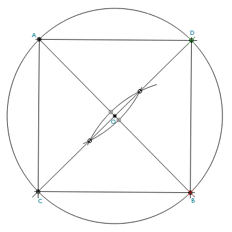

Construction of a Inscribed Square with Compass and Straightedge

Steps:
- Draw circle with radius R centered at point O
- Draw a diameter, intersecting the circle at points A and B
- Create a perpendicular line to AB at point O, intersecting the circle at points C and D.
- The points A, C, B, and D form the inscribed square.